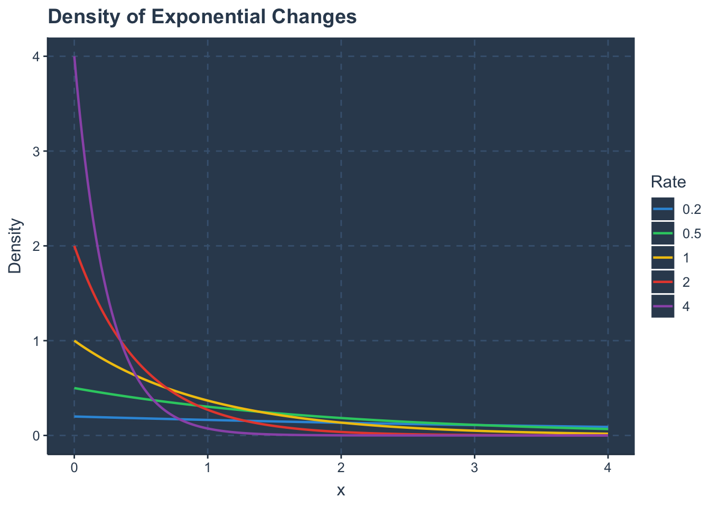
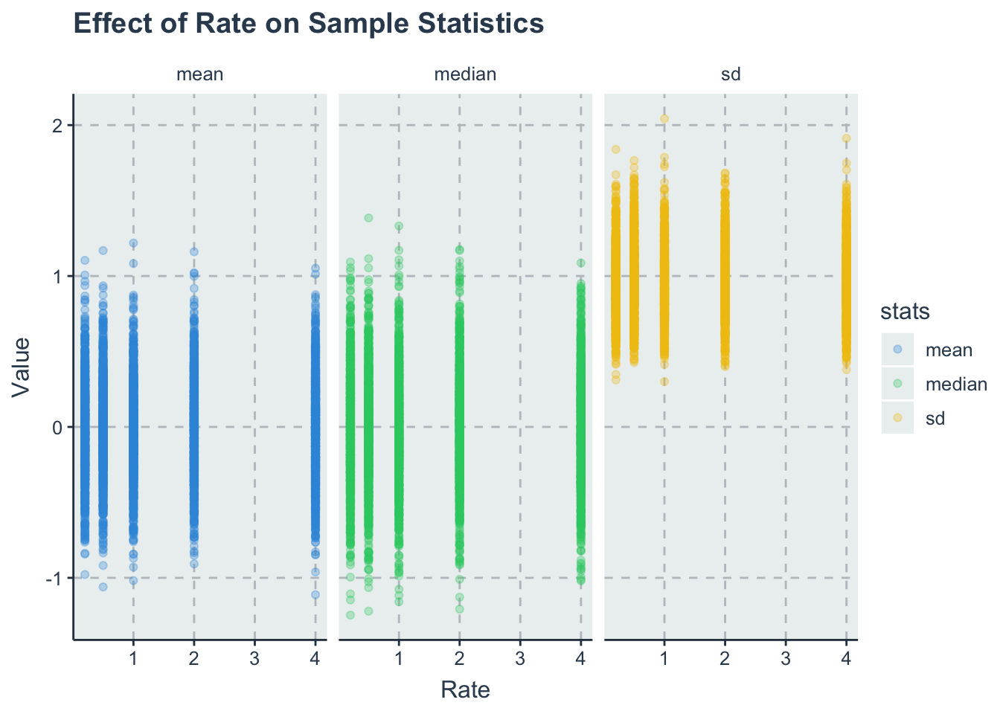
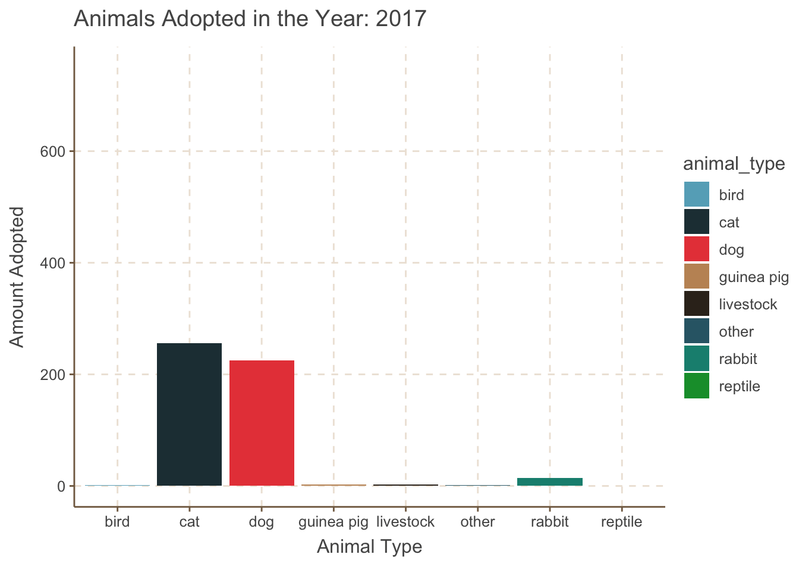
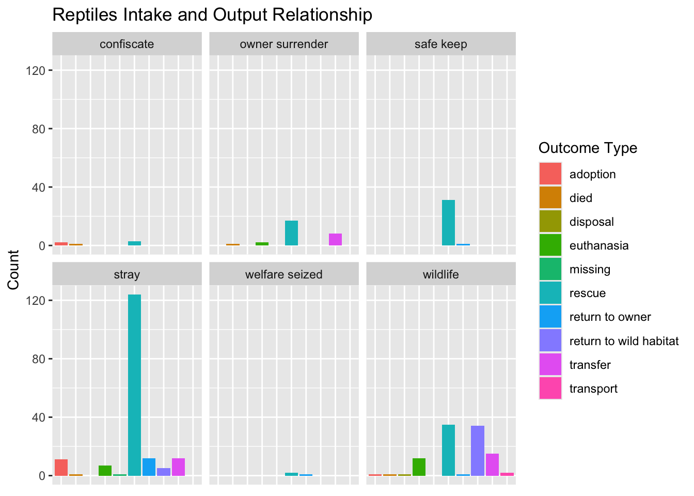

library(tidyverse)
library(ggthemr)HW4 Sampling
BIOL 607
Sampling
0. Intro
1. Visualizing the Exponential distribution
1a.
tibz <- crossing(x = seq(0, 4, length.out = 200),
rate = c(0.2, 0.5, 1, 2, 4))1b.
dens_tibz <- tibz |>
mutate(density = dexp(x, rate = rate))1c.
ggthemr("flat dark")
dens_plot <-
ggplot(dens_tibz, aes(x = x, y = density, color = factor(rate))) +
geom_line(linewidth = 0.8) +
labs(title = "Density of Exponential Changes",
x = "x",
y = "Density",
color = "Rate")
dens_plot
2. Precision and Sampling the Exponential
2a.
ps_setup <- expand.grid(sims = 1:1000, rate = c(0.2, 0.5, 1, 2, 4)) |>
as_tibble()2b.
set.seed(0603)
sample_tibz <- ps_setup |>
group_by(sims, rate) |>
reframe(sample = rnorm(10)) |>
unnest(sample)
sample_tibz# A tibble: 50,000 × 3
sims rate sample
<int> <dbl> <dbl>
1 1 0.2 1.65
2 1 0.2 -0.347
3 1 0.2 -0.0985
4 1 0.2 0.937
5 1 0.2 0.223
6 1 0.2 2.70
7 1 0.2 -0.517
8 1 0.2 -1.04
9 1 0.2 -0.0744
10 1 0.2 2.17
# ℹ 49,990 more rows2c.
summary_tibz <- sample_tibz |>
group_by(sims, rate) |>
summarise(
mean = mean(sample),
median = median(sample),
sd = sd(sample),
.groups = "drop")
summary_tibz# A tibble: 5,000 × 5
sims rate mean median sd
<int> <dbl> <dbl> <dbl> <dbl>
1 1 0.2 0.561 0.0741 1.25
2 1 0.5 0.166 -0.0700 1.30
3 1 1 -0.0639 0.0367 0.690
4 1 2 -0.645 -0.892 1.19
5 1 4 0.0819 0.0969 0.688
6 2 0.2 0.225 0.300 0.803
7 2 0.5 0.264 0.0419 0.951
8 2 1 -0.664 -0.966 1.01
9 2 2 0.153 0.461 1.34
10 2 4 0.0957 0.106 0.920
# ℹ 4,990 more rows2d.
library(knitr)
se_table <- summary_tibz |>
group_by(rate) |>
summarize(
"SE mean" = sd(mean) / sqrt(1000),
"SE median" = sd(median) / sqrt(1000),
"SE Standard Deviation" = sd(sd) / sqrt(1000),
.groups = "drop")
kable(se_table, digits = 4, caption = "Standard Errors of Mean, Median, and SD by Rate", align = "lccc")| rate | SE mean | SE median | SE Standard Deviation |
|---|---|---|---|
| 0.2 | 0.0098 | 0.0114 | 0.0071 |
| 0.5 | 0.0098 | 0.0115 | 0.0076 |
| 1.0 | 0.0099 | 0.0115 | 0.0072 |
| 2.0 | 0.0102 | 0.0117 | 0.0072 |
| 4.0 | 0.0102 | 0.0117 | 0.0074 |
ggthemr("flat")
plot_data <- summary_tibz |>
pivot_longer(cols = c(mean, median, sd), names_to = "stats", values_to = "value")
stat_plot <- ggplot(plot_data, aes(x = rate, y = value, color = stats)) +
geom_point(alpha = 0.3) +
facet_wrap(~stats) +
labs(
title = "Effect of Rate on Sample Statistics",
x = "Rate",
y = "Value"
)
stat_plot
2e.
These results do not suprise me as the first density plot suggest that for higher rates the statisitics(mean, standard deviation, and mean) should have less variation amoung simulations, thus making sense that the common statistics have lower standard errors at higher rates.
3. Tidy Tuesday 2025-03-04
library(readr)
longbeach <- read_csv('https://raw.githubusercontent.com/rfordatascience/tidytuesday/main/data/2025/2025-03-04/longbeach.csv')
library(gganimate)
ggthemr("fresh")
adopt_plot <- longbeach |>
mutate(year = as.numeric(format(intake_date, "%Y"))) |>
filter(outcome_type == "adoption") |>
ggplot(mapping = aes(x = animal_type, fill = animal_type)) +
labs(title = "Animals Adopted in the Year: {frame_time}",
x = "Animal Type",
y = "Amount Adopted") +
geom_bar() +
scale_y_continuous(limits = c(0, 750)) +
transition_time(year)
animate(adopt_plot)
ggthemr_reset()In this graph you can see the amount of animal types adopted per year, things I noticed is that cats and dogs are the most adopted out of the bunch as well as during the year 2020 all animal adotion was at its lowest.
reptile <- longbeach |>
filter(animal_type == "reptile") |>
ggplot(mapping = aes(x = outcome_type, fill = outcome_type)) +
geom_bar() +
theme_grey() +
facet_wrap(~intake_type) +
theme(axis.title.x=element_blank(),
axis.text.x=element_blank(),
axis.ticks.x=element_blank()) +
labs(title = "Reptiles Intake and Output Relationship",
y = "Count",
fill = "Outcome Type")
reptile